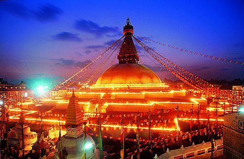
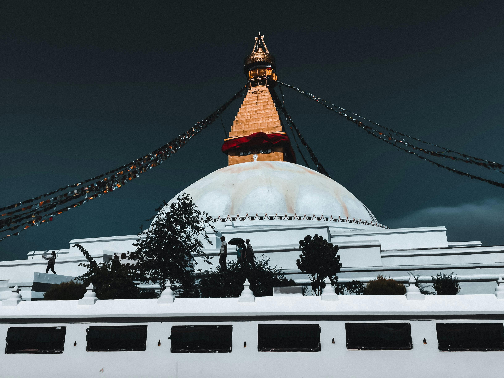
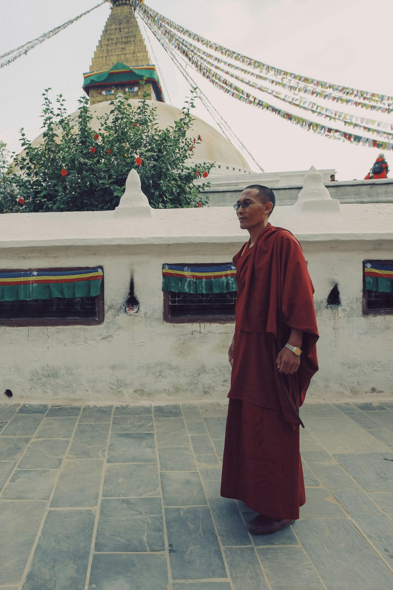
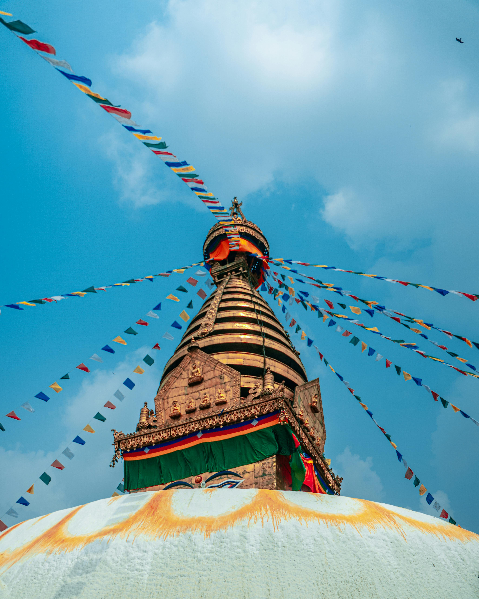

Discover Boudhanath Stupa
The **Boudhanath Stupa**, known as Jharung Khashor, is one of the most revered spiritual landmarks in Nepal. Built in the 5th century, it symbolizes enlightenment and peace. The stupa is a UNESCO World Heritage site and holds immense cultural and religious significance for Buddhists around the world.

According to legend, the stupa was built by a poor chicken-keeper, Jadzima, whose perseverance and prayers earned her permission from the king. Completed by her sons, the stupa became a symbol of wish fulfillment and blessings. Visitors often believe that their first prayer upon seeing the stupa will come true.
Things to Know
- Entrance Fees:
- Foreigners: NPR 250
- SAARC Countries: NPR 50
- Nepali Citizens: Free
- Spoken Language: Nepali (Guides available in English and other languages).
- Transportation:
- Bus
- Taxi
- Guides: Local guides can provide detailed explanations and historical insights.
Gallery



Nearby Attractions
- Pashupatinath Temple: A sacred Hindu temple located just a few kilometers away.
- Kathmandu Durbar Square: Explore the ancient architecture of Kathmandu's royal palace.
- Local Markets: Enjoy Tibetan artifacts, souvenirs, and local food.